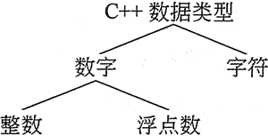
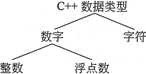

首页 > 编程笔记
C++ int，short，long（详解版）
C++ 有许多不同类型的数据。变量根据其数据类型进行分类，并确定可能存储在其中的信息种类。在这些数据类型中，整型变量只能保存整数。
计算机程序从现实世界收集数据，并以各种方式操作它们。有许多不同类型的数据，例如，在数字信息领域，有整数和小数，也有负数和正数，还有文字信息。例如，名称和地址被存储为字符串，它是由字符组成的。在编写程序时，必须确定可能遇到哪些类型的信息。
如果程序员正在编写一个程序来计算某个遥远星球距离地球的公里数，则他需要一些可以容纳很大数字的变量；如果正在设计软件来记录微观尺寸，则需要存储非常小而精确的数字。此外，如果正在编写一个必须执行成千上万次密集计算的程序，则需要将数据存储在可以快速处理的变量中。变量的数据类型决定所有这些因素。
虽然 C++ 提供了许多数据类型，但在最广泛的意义上只有两个：数字和字符。数字数据类型分为两类：整数和浮点数，如图 1 所示。

图 1 基础的 C++ 数据类型
整数就是像 -2、19 和 24 这样取整的数字。浮点数有小数点，例如，-2.35、19.0 和 0.024。此外，整数和浮点数据类型还有更多的分类。
为数字变量选择最佳数据类型的主要考虑因素如下：
先来看整型数据类型。如表 1 所示，C++ 有 8 种不同的数据类型用于存储整数。它们拥有的存储数据的内存字节和可以存储的数值范围是不一样的。数据类型可以容纳的字节数称为其大小。一般来说，数据类型的大小越大，那么它可以容纳的值的范围越大。
如何使用这些不同的组合取决于数据类型。例如，用于存储非负整数（如年龄或体重）的无符号短整型类型使用其16 位来表示值 0〜+65 535。而和它不同的短整型数据类型则需要同时存储正数和负数，因此它使用其 16 位来表示从 -32 768〜+32 767 的值。
请注意，在表 1 中，整型和长整型数据类型具有相同的大小和范围，无符号整型和无符号长整型数据类型具有相同的大小和范围。这并不总是正确的，因为整型的大小取决于当前使用的系统类型。以下是唯一能保证的：
除 int（整型）外，在表 1 中的其他数据类型都可以釆用忽略单词 int 的简写方式。表 2 是使用完整数据类型名称定义整型变量与使用简写方式的对比。因为它们可以简化定义语句，所以程序员通常使用简写的数据类型名称。
下面的程序使用了整型、无符号整型和长整型变量：
在大多数程序中都需要使用多个变量。如果程序使用多个相同数据类型的变量，例如两个整型：length 和 width，则可以单独定义它们，就像下面这样：
C++ 语言令人开心的特征之一是，它允许程序员控制程序的几乎每个方面。如果需要更改某些东西存储在内存中的方式，则相应的工具唾手可得。例如，如果现在有一个整型常数，但是需要将其作为长整型数据存储在内存中，怎么办呢？在 C++ 中，只要在数字的末尾加上一个字母 L 就可以实现这一目标了。示例代码如下：
这意味着该赋值被视为一个长整型。
同样的道理，如果想让一个整型常数被视为超长整形，则可以在数字的后面追加 LL 字母。示例代码如下：
默认情况下，C++ 假定所有整型常数以十进制表示。程序员可以通过在其前面放置 0x 来表达十六进制数字。注意，这是数字 0 后面接 x，而不是字母 o 加 x。以下是十六进制数字 F4 用 C++ 的表示方法：
计算机程序从现实世界收集数据，并以各种方式操作它们。有许多不同类型的数据，例如，在数字信息领域，有整数和小数，也有负数和正数，还有文字信息。例如，名称和地址被存储为字符串，它是由字符组成的。在编写程序时，必须确定可能遇到哪些类型的信息。
如果程序员正在编写一个程序来计算某个遥远星球距离地球的公里数，则他需要一些可以容纳很大数字的变量；如果正在设计软件来记录微观尺寸，则需要存储非常小而精确的数字。此外，如果正在编写一个必须执行成千上万次密集计算的程序，则需要将数据存储在可以快速处理的变量中。变量的数据类型决定所有这些因素。
虽然 C++ 提供了许多数据类型，但在最广泛的意义上只有两个：数字和字符。数字数据类型分为两类：整数和浮点数，如图 1 所示。

图 1 基础的 C++ 数据类型
整数就是像 -2、19 和 24 这样取整的数字。浮点数有小数点，例如，-2.35、19.0 和 0.024。此外，整数和浮点数据类型还有更多的分类。
为数字变量选择最佳数据类型的主要考虑因素如下：
- 变量是需要保存整数还是浮点数值；
- 变量需要存储的最大数和最小数；
- 变量是需要保存符号（正数和负数）还是只需要保存无符号（只有 0 和正数）数字；
- 存储在变量中的值所需的小数位数精度；
先来看整型数据类型。如表 1 所示，C++ 有 8 种不同的数据类型用于存储整数。它们拥有的存储数据的内存字节和可以存储的数值范围是不一样的。数据类型可以容纳的字节数称为其大小。一般来说，数据类型的大小越大，那么它可以容纳的值的范围越大。
| 数据类型 | 字节大小 | 数值范围 |
|---|---|---|
| short int (短整型） | 2 字节 | -32 768 〜+32 767 |
|
unsigned short int (无符号短整型） |
2 字节 | 0 〜+65 535 |
| int (整型) | 4 字节 | -2 147 483 648 〜+2 147 483 647 |
| unsigned int (无符号整型） | 4 字节 | 0 〜4 294 967 295 |
| long int (长整型） | 4 字节 | -2 147 483 648 〜+2 147 483 647 |
|
unsigned long int (无符号长整型） |
4 字节 | 0 〜4 294 967 295 |
| long long int (超长整型） | 8字节 | -9 223 372 036 854 775 808~9 223 372 036 854 775 807 |
|
unsigned long long int (无符号超长整型） |
8字节 | 048 446 744 073 709 551 615 |
注意，超长整型和无符号超长整型是在 C++11 中引入的。
我们知道，一个字节由 8 位组成。因此，将数据存储在两个字节的内存中的数据类型可以容纳 16 位信息。这意味着它可以存储 216 位模式，即它有 65 536 种不同的 0 和 1 组合。使用 4 个字节内存的数据类型有 32 位，因此它可以保存 232 种不同的位模式，这意味着它有 4 294 967 296 种不同的组合。如何使用这些不同的组合取决于数据类型。例如，用于存储非负整数（如年龄或体重）的无符号短整型类型使用其16 位来表示值 0〜+65 535。而和它不同的短整型数据类型则需要同时存储正数和负数，因此它使用其 16 位来表示从 -32 768〜+32 767 的值。
请注意，在表 1 中，整型和长整型数据类型具有相同的大小和范围，无符号整型和无符号长整型数据类型具有相同的大小和范围。这并不总是正确的，因为整型的大小取决于当前使用的系统类型。以下是唯一能保证的：
- 整型至少与短整型一样大。
- 长整型至少与整型一样大。
- 无符号短整型与短整型大小相同。
- 无符号整型与整型大小相同。
- 无符号长整型与长整型大小相同。
- 超长整型和无符号超长整型数据类型将确保至少有 8 字节（64位）大小；
除 int（整型）外，在表 1 中的其他数据类型都可以釆用忽略单词 int 的简写方式。表 2 是使用完整数据类型名称定义整型变量与使用简写方式的对比。因为它们可以简化定义语句，所以程序员通常使用简写的数据类型名称。
| 使用完整的数据类型名称 | 使用简写的数据类型名称 |
|---|---|
| short int month; | short month; |
| unsigned short int amount; | unsigned short amount; |
| int days; | int days;(没有简写形式） |
| unsigned int speed; | unsigned speed; |
| long int deficit; | long deficit; |
| unsigned long int insects; | unsigned long insects; |
| long long int grandTotal; | long long grandTotal; |
| unsigned long long int population; | unsigned long long population; |
下面的程序使用了整型、无符号整型和长整型变量：
// This program has variables of several of the integer types. #include <iostream> using namespace std; int main() { int checking; unsigned int miles; long days; checking = -20; miles = 4276; days = 192000; cout << "We have made a long journey of " << miles << " miles."; cout << "\nOur checking account balance is " << checking; cout << "\nAbout " << days << " days ago Columbus "; cout << "stood on this spot.\n"; return 0; }程序输出结果：
We have made a long journey of 4276 miles.
Our checking account balance is -20
About 192000 days ago Columbus stood on this spot.
在大多数程序中都需要使用多个变量。如果程序使用多个相同数据类型的变量，例如两个整型：length 和 width，则可以单独定义它们，就像下面这样：
int length;
int width;
int length, width;
当然，也有许多教师在相同的语句中定义多个变量时，更倾向于将每个变量放在它们自己的行上，就像下面这样：int length, width;
无论是将多个变量放在同一行还是将每个变量放在它们自己的行上，当需要在单个语句中定义相同类型的多个变量时，只需用逗号分隔其名称。在整个定义的末尾使用分号。下面的程序说明了这一点，该程序还显示了如何在定义时赋予变量的初始值：
//This program defines three variables in the same statement
//They are given initial values at the time they are defined
#include <iostream>
using namespace std;
int main()
{
int floors =15, rooms= 300, suites = 30;
cout << "The Grande Hotel has " << floors << " floors\n";
cout << "with " << rooms << " rooms and " << suites;
cout << " suites. \n";
return 0;
}
程序输出结果
The Grande Hotel has 15 floors
with 300 rooms, and 30 suites.
整数和长整型常数
来看一看以下语句：int floors =15,rooms= 300, suites =30;
该语句包含 3 个整数常数。在 C++ 中，整数常数通常作为 int 存储在内存中。C++ 语言令人开心的特征之一是，它允许程序员控制程序的几乎每个方面。如果需要更改某些东西存储在内存中的方式，则相应的工具唾手可得。例如，如果现在有一个整型常数，但是需要将其作为长整型数据存储在内存中，怎么办呢？在 C++ 中，只要在数字的末尾加上一个字母 L 就可以实现这一目标了。示例代码如下：
long amount;
amount = 32L;
这意味着该赋值被视为一个长整型。
同样的道理，如果想让一个整型常数被视为超长整形，则可以在数字的后面追加 LL 字母。示例代码如下：
long long amount;
amount = 32LL;
十六进制和八进制常数
程序员通常使用十进制之外的计数系统来表示值。例如，十六进制和八进制便很受欢迎，这是因为某些编程任务在使用它们时比使用十进制数更方便。默认情况下，C++ 假定所有整型常数以十进制表示。程序员可以通过在其前面放置 0x 来表达十六进制数字。注意，这是数字 0 后面接 x，而不是字母 o 加 x。以下是十六进制数字 F4 用 C++ 的表示方法：
0xF4
八进制数字前面必须有一个 0（数字 0，不是字母 0）。例如，八进制数字 31 表示为：031
注意，初学者可能在一段时间内都不会编写这种需要使用十六进制或八进制数字的程序，但是，如果碰到这样的代码段，那么至少需要能正确地识别它们。关注公众号「站长严长生」，在手机上阅读所有教程，随时随地都能学习。内含一款搜索神器，免费下载全网书籍和视频。

微信扫码关注公众号